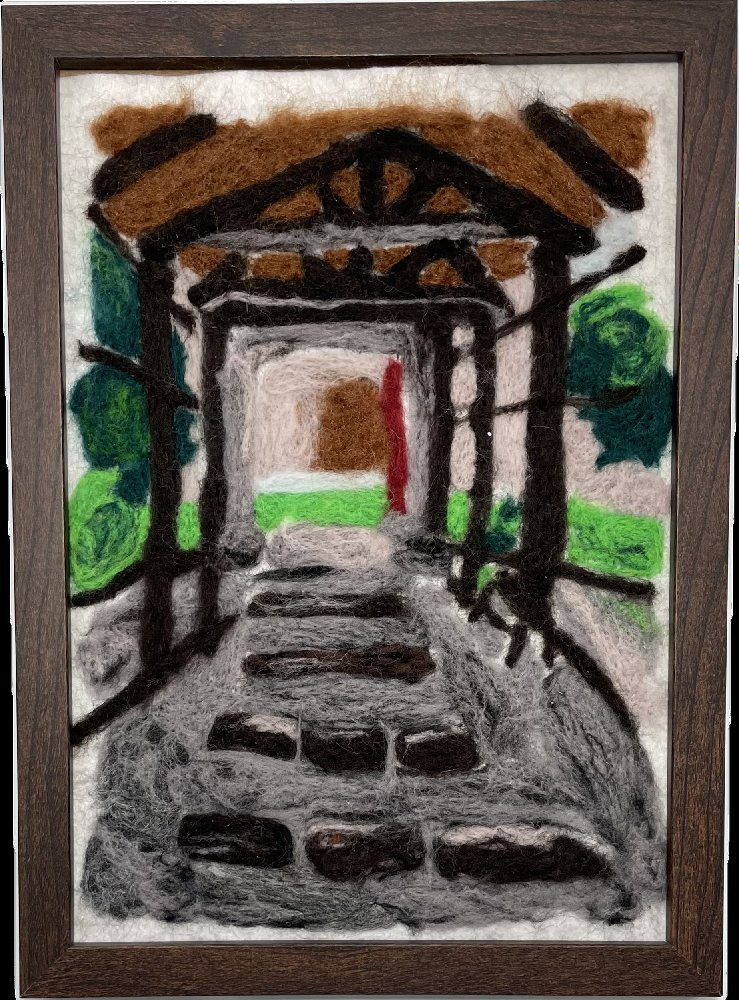

作品名稱：時光迴廊
作者姓名：鄭羽涵
作品主題：Memories and the Flow of Time
作品敘述：這幅羊毛氈畫作描繪了一條充滿歲月痕跡的長廊，仿佛通向過去與回憶的世界。階梯與木質結構象徵著時間的推移，而周圍的綠意則代表生命的持續與希望。畫面中的柔和色彩與纖維質感增添了夢幻與懷舊的氛圍，讓觀者彷彿能感受到時光在指尖流轉。
This needle-felted artwork portrays a corridor filled with traces of time, seemingly leading to a world of memories and the past. The wooden structure and stone steps symbolize the passage of time, while the surrounding greenery represents the continuity of life and hope. The soft colors and fiber textures create a dreamy, nostalgic atmosphere, allowing the viewer to almost feel time slipping through their fingers.